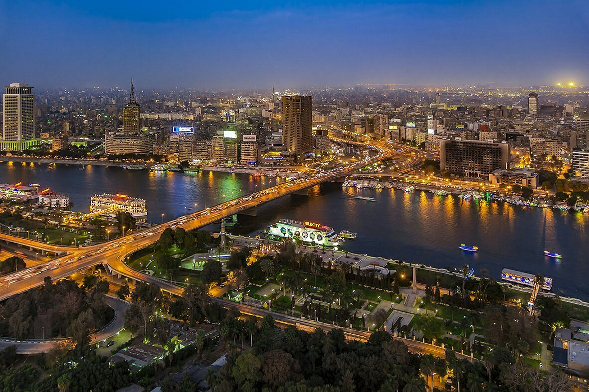
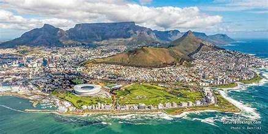
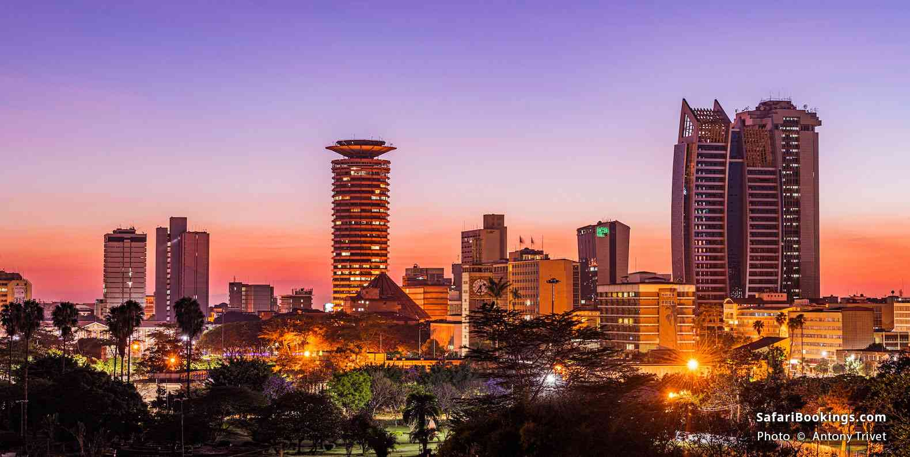
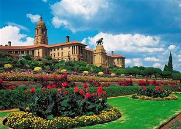
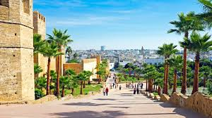

Best cities in Africa
Cairo, Egypt

- Name: Cairo
- Meaning: The Victorious
- Location:Situated on the Nile River in northern Egypt, near the Nile Delta
Cape Town, South Africa

- Name: Cape Town
- History: Founded in 1652 by the Dutch East India Company and has a complex history involving colonization, slavery, and the struggle against apartheid.
- Nickname: Mother City
Nairobi,Kenya

- Name: Nairobi
- Unique Feature: Home to Nairobi National Park, where wildlife roams near the city.
- Nickname: "Green City in the Sun"
- Name Origin: From the Maasai phrase "Enkare Nyirobi," meaning "place of cool waters".
Pretoria, South Africa

- Name: Pretoria
- Founding: Established in 1855 by Marthinus Pretorius, named for his father, Andries Pretorius.
- Nickname: Jacaranda City
Rabat, Morroco

- Name:Rabat
- History: Founded by the Almohads, it later became a base for Barbary corsairs (pirates) before French colonization.
- Name Origin: Derived from "Ribat al-Fath" (Monastery of Conquest)